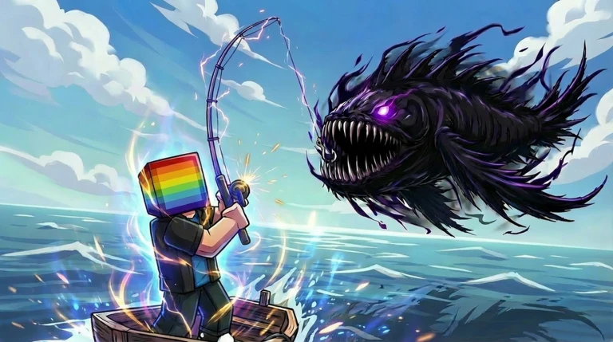

Titan Fishing isn't just a fishing game — it's an epic battle against colossal sea monsters. Upgrade your rod, unlock skills, and explore 5+ islands to become a legendary Titan Fishing angler.
Every cast is a new adventure
Aim for the Orange Zone when casting to boost your luck stat and attract rarer, higher-value fish with every throw.
Once hooked, enter battle mode — spam click to drain the fish's HP while managing your line distance to avoid a snap.
Unlock Z and X abilities via Skill Books. Z reels in faster to prevent line breaks; X deals burst damage. Build your own playstyle.
Climb from Beginner Rod to the Golden Rod. Pro tip: skip the Rusty Rod entirely and save your cash for the real power spike.
Buy a boat and sail to 5e+ islands of increasing difficulty. Each zone unlocks new fish species and bigger rewards.
Massive titans like the Ice Boss spawn every 30 minutes. Compete server-wide for top-tier loot and bragging rights.
Titan Fishing is a deep-sea fishing adventure on Roblox that throws out the slow, relaxing fishing simulator formula. Every catch in Titan Fishing is a high-stakes boss fight.
In Titan Fishing, you'll need precise casts, fast reflexes, and smart skill usage to take down creatures weighing thousands of kilograms. As you upgrade your gear and unlock new islands, the Titan Fishing challenge — and the fun — keeps escalating.

Four steps from rookie to legend
Search "Titan Fishing" on Roblox or click the Play button on this page. It's free — no excuses.
Aim for the Orange Zone when casting. Landing there boosts your luck and pulls in rarer fish.
Spam click to drain HP, use Z/X skills to assist, and keep your line distance in check. Don't let it snap.
Sell your catch, skip the Rusty Rod, grind toward the Golden Rod, buy a boat, and take on Titan Bosses.
Not your average fishing game
Titan Fishing offers clear upgrade paths from starter gear to endgame rods and islands. Every milestone feels earned.
No idle waiting in Titan Fishing. Every fish is a real-time battle that demands reflexes and strategy.
Titan Fishing features 5+ unique islands, diverse fish tiers, and world bosses that keep the content fresh and expanding.
Redeem Titan Fishing codes for free cash, skins, and Skill Books. A great head start for new players.
New player essentials
Yes, Titan Fishing is completely free on Roblox. Some items can be purchased with in-game currency, which you can also earn through Titan Fishing gameplay or redeem codes.
Earn cash by selling fish in Titan Fishing, then buy it from the Rod Shop. Skip the Rusty Rod entirely — it's not worth the cost. Save up and go straight for the Golden Rod.
Landing your cast in the Orange Zone gives a significant luck boost in Titan Fishing, increasing your chances of hooking rare and high-value fish.
Z (Reel In) speeds up pulling the fish closer to prevent line snaps. X (Damage/Control) deals burst damage or slows the fish's movement.
In Titan Fishing, titans like the Ice Boss respawn every 30 minutes. All players on the server can participate — defeat them for top-tier rewards.
Use bait for a luck multiplier, always aim for the Orange Zone, bulk sell your inventory, and move to higher-level islands as soon as your rod can handle it.